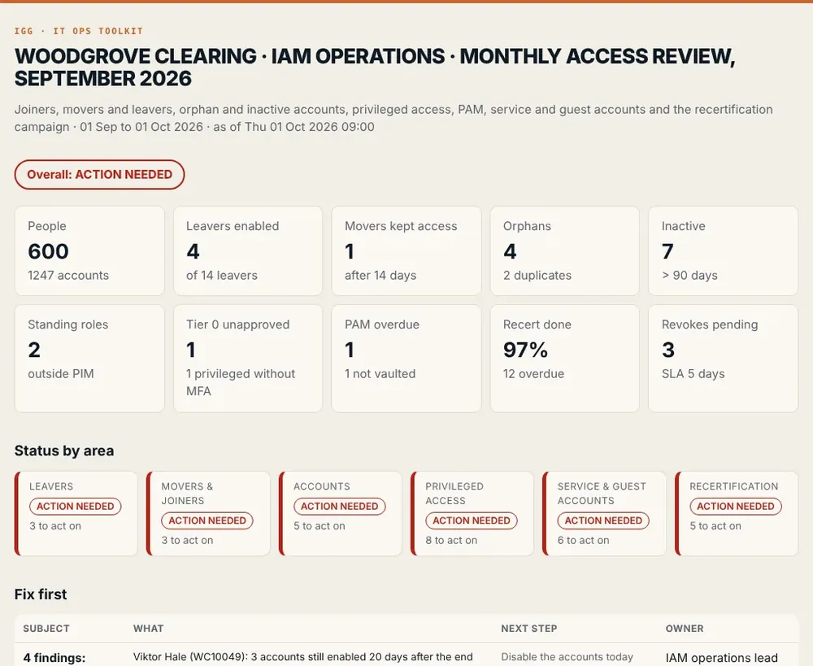

A systems administrator who left three weeks ago still has his admin account enabled and in Domain Admins, the group with full control of the Windows domain. That is what the monthly access review published with this post finds. It is an open-source tool that runs on demo data from a made-up clearing house of 600 people, reviewed over one month, with the problems placed on purpose.
The account survives because nobody joins the sources. HR knows who left and who moved, the directories know who can still sign in, the vault knows which passwords were rotated and the recertification campaign knows who approved what. The tool joins those exports per person and per account, every month.
A trader signed in four days after his last day
The same review finds a trader who signed in four days after leaving, and lists every account still enabled past the end date and its grace period. It also follows movers: someone who moved from trading to finance in August kept the trading platform, and the platform owner approved it in the campaign.
A permanent Global Administrator and a password unchanged for 200 days
In privileged access, a Global Administrator role was assigned permanently, outside PIM, the Entra ID feature that grants admin roles only when they are needed. A service account password kept in the vault has not changed in 200 days, and a batch account belongs to someone who left and is still used interactively, by a person signing in rather than by a process. The review also checks members of Tier 0, the most sensitive admin level, beyond the approved list.
One reviewer approved 140 items in three minutes
The recertification campaign, in which owners confirm or remove each access, has 446 items. One reviewer approved 140 of them in three minutes, and three revokes were never actioned. The tool measures how the campaign was done, not only whether it was finished: items not reviewed on time, revokes pending, rubber-stamping and entitlements overdue for review by sensitivity tier.
The outputs are a web report with a status per area and an overall status, a pack for the monthly IAM service review with 13 controls written the way an auditor tests them, and CSV files for leavers, movers, orphan accounts, privileged access, service accounts and the campaign.
How to use it with real data
The repository includes a read-only PowerShell exporter for Active Directory and Microsoft Graph. The tool runs on Python with only the standard library and comes with 18 tests and a runbook. The planned next step is to run it on last month's real exports and tune the grace periods, the thresholds, the PIM roles and the approved Tier 0 list with the IAM and infrastructure leads. The company, people and accounts of the demo are fictional.
Where it comes from
The tool comes from administering Active Directory and Entra ID with PIM and just-in-time access, managing privileged accounts in CyberArk and ManageEngine Password Manager Pro, owning the joiner process and answering audits under ISO 27001. Two lessons shaped it: a leaver's account is a finding even if nobody used it, and a move is the moment access goes wrong, not the next campaign.
Want to bring it to your environment or adapt it to your case? Get in touch and we can look at it together.
Tech Career Lab · newsletter
Found this useful? Every two weeks I send one practical idea for IT professionals: LinkedIn, projects, networking and hiring processes.
Sign up and get the 33 ideas →